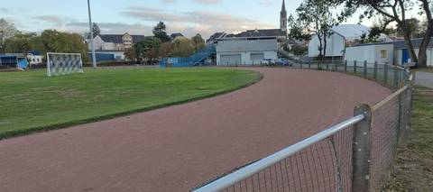
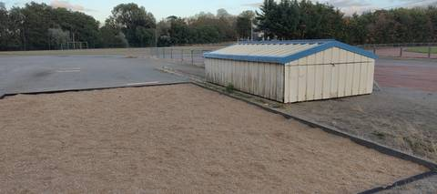
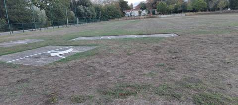

{kind=link}
{kind=link}
{kind=link}
Belle surprise. Je m'attendais à une vieille cendrée fatiguée et j'ai trouvé un anneau régulier, propre et manifestement entretenu, autour d'un terrain de football en bon état. J'ai visité une autre cendrée le même jour, sous la pluie, et la comparaison tourne nettement à l'avantage de celle-ci. Elle doit faire 400 m, sans que je l'aie mesurée. Il n'y a aucun couloir tracé : c'est parfait pour du footing et on peut tout à fait y faire du fractionné, mais ne comptez pas y chronométrer quoi que ce soit de précis. Bon point pour les agrès, rares sur ce genre de site : un sautoir à la perche à l'ancienne dont le tapis est rangé dans un abri en bois, une belle fosse de saut en longueur avec son sable en place, et deux aires de lancer du poids sur dalle béton dans l'herbe. De quoi faire découvrir les sauts et les lancers. Le portail était ouvert le soir de ma visite ; le stade sert aussi au club de foot, donc à prévoir selon les créneaux.
Stade Rene Masse
Boulevard des Pas Enchantés, 44230 Saint-Sébastien-sur-Loire · Loire-Atlantique
Stade Rene Masse est un équipement d'athlétisme situé à Saint-Sébastien-sur-Loire (Loire-Atlantique), en Pays de la Loire. Il dispose d'une piste en cendrée / stabilisé. Le recensement du ministère la classe « piste isolée » : elle n'appartient pas à un stade d'athlétisme. On y trouve sautoir longueur, sautoir à la perche et lancer du poids. Le site propose l'éclairage, des vestiaires et des douches. L'accès est libre.
Photos



Les sautoirs et les aires de lancer sont ce que la donnée publique décrit le plus mal, et ce qu'on photographie le moins. Un gros plan du sol, une perche bâchée, un bac de sable envahi : chacun ajoute ce qu'aucun champ ne porte.
Envoyer une photoSans compte GitHubPiste
- Revêtement
- Cendrée / stabilisé
- Développement
- 400 m — estimé d'après OpenStreetMap, non mesuré sur place
- Type de piste
- Piste isolée
- Configuration
- Plein air
- Mise en service
- 1993
Agrès recensés
- Sautoir longueur
- Sautoir à la perche
- Lancer du poids
Accès & services
- Accès libre
- Oui
- Éclairage
- Oui
- Vestiaires
- Oui
- Douches
- Oui
- Sanitaires
- Oui
- Tribunes
- 200 places
Visite du 29 août 2026, en fin de soirée : le portail était ouvert et on accède à l'anneau sans rien franchir. Il existe donc bien une clôture et un portail, et cette ouverture est celle d'un soir de fin août — elle ne dit rien des créneaux du club ni des périodes de fermeture. Aucun panneau d'horaires ni de règlement n'a été relevé, et rien n'affichait de créneaux réservés. Le club-house et le bâtiment des vestiaires sont bien présents en bord de piste, ainsi qu'une tribune, mais ils n'ont été vus que de l'extérieur : les quatre vestiaires, les douches et les sanitaires que déclare le recensement n'ont pas été vérifiés ouverts. Le site est partagé avec le Saint-Sébastien Football Club, dont le siège est au 1 boulevard des Pas Enchantés et qui utilise le terrain central : une occupation par le football est à prévoir aux heures d'entraînement.
Avis des athlètes
Visite sur place le 29 août 2026, en fin de soirée. Revêtement confirmé au sol : cendrée, conforme au recensement — un stabilisé rouge, régulier, sans nid-de-poule ni ravinement visible sur le virage parcouru, et manifestement entretenu. C'est une piste en meilleur état que ce que laisse attendre une cendrée de 1993, et le contraste est net avec la cendrée détrempée et envahie d'herbe du Complexe Vertou Centre visitée le même jour. Aucun couloir n'est tracé sur l'anneau : la cendrée est nue, la seule ligne blanche visible sur les photos courant en bord extérieur. On ne peut donc pas y travailler au couloir ni y placer un départ précis, et le recensement ne renseigne d'ailleurs aucun nombre de couloirs. Sur le développement, rien n'a été mesuré sur place, ni au décamètre ni à la montre. La fiche conserve l'estimation de 400 m tirée du tracé de l'anneau dans OpenStreetMap (w46596667), et le recensement ne donne aucune longueur. L'anneau paraît de dimension normale à l'œil, ce qui n'est pas une mesure : un relevé au décamètre en couloir 1, à 30 cm de la bordure, reste à faire. L'anneau est en plein air, tracé autour d'un terrain de football en gazon tondu et en bon état, avec ses buts en place. Une clôture bois à lisses puis une barrière métallique séparent la piste du parking et des bâtiments. Des mâts d'éclairage sont en place le long de l'anneau, ce qui confirme l'éclairage déclaré au recensement ; ils n'ont pas été vus allumés. Une tribune et un club-house bordent le terrain, conformes aux 200 places et aux vestiaires déclarés. Trois agrès ont été vus. Le saut en longueur dispose d'une fosse de sable rectangulaire et large, bordée d'une bavette caoutchouc noire, sable en place et propre, avec une aire en enrobé marquée de repères clairs qui lui sert d'élan. Le sautoir à la perche est du type ancien : le tapis est rangé dans un abri en bois à toit bleu posé en bord de fosse, il faut donc l'en sortir pour sauter — l'agrès existe, mais il n'est pas prêt à l'emploi. Le lancer du poids dispose de deux aires distinctes, matérialisées par deux dalles béton implantées dans l'herbe hors de l'anneau : cercles peints en blanc, lignes de secteur tracées au sol, et un butoir blanc posé — non fixé — sur l'une des dalles le soir de la visite. Aucune cage de disque ou de marteau, aucun couloir de javelot, aucune rivière de steeple, aucun sautoir en hauteur, aucune planche de triple n'ont été repérés. Le recensement ne déclarait jusqu'ici aucun agrès nommé pour ce site, seulement une « aire de saut » indéterminée. Contexte : le stade est en bord de Loire, boulevard des Pas Enchantés, face à l'extrémité est de l'île de Nantes. Il est partagé avec le Saint-Sébastien Football Club, qui en fait l'un de ses trois terrains.
Autres sites du département
- Gymnase des Savarieres
- Complexe Sportif de l'Ouche Quinet
- Gymnase Malakoff 4
- Ecole de la Marteliere
- Stade Michel Lecointre
- Lycée polyvalent Saint-Pierre La Joliverie
Signaler une erreur ou compléter la fiche
Réf. I441900011 · Source : Data ES + communauté — Data ES, ministère chargé des Sports, Licence Ouverte 2.0. Les données sont déclaratives et peuvent être incomplètes : vérifiez les conditions d'accès avant de vous déplacer.